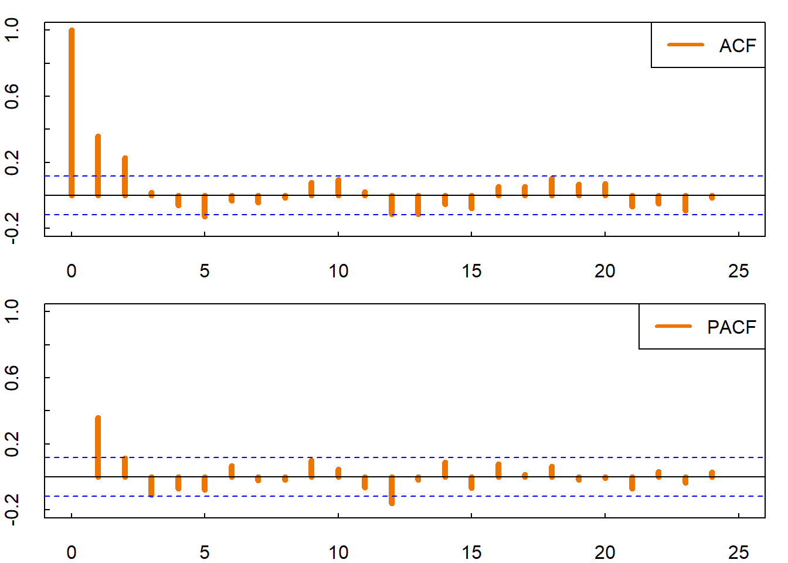
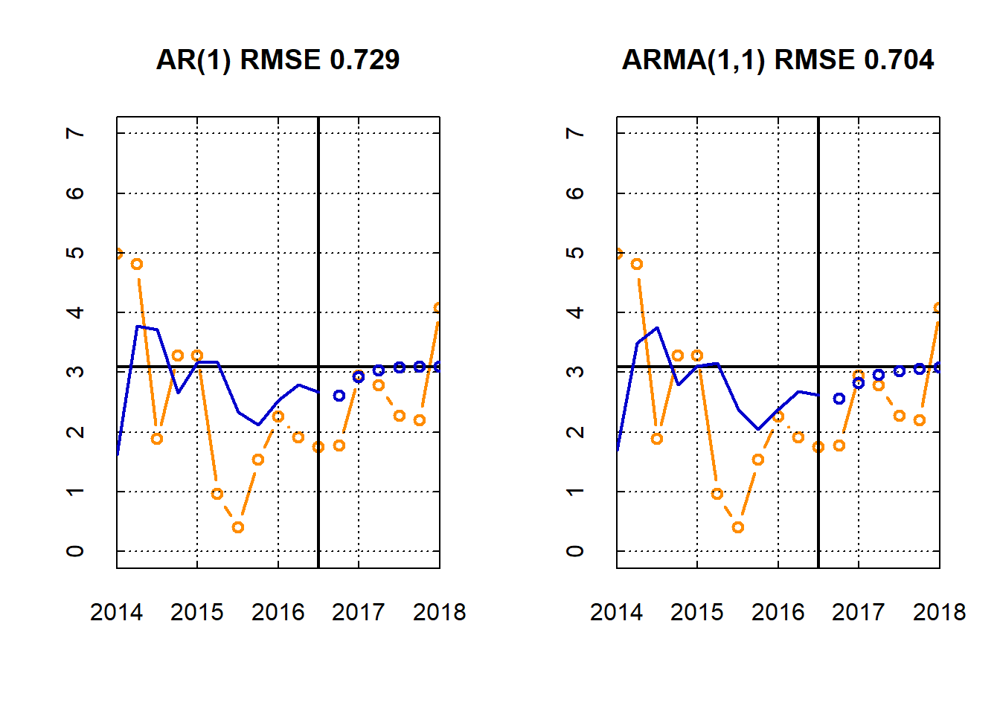
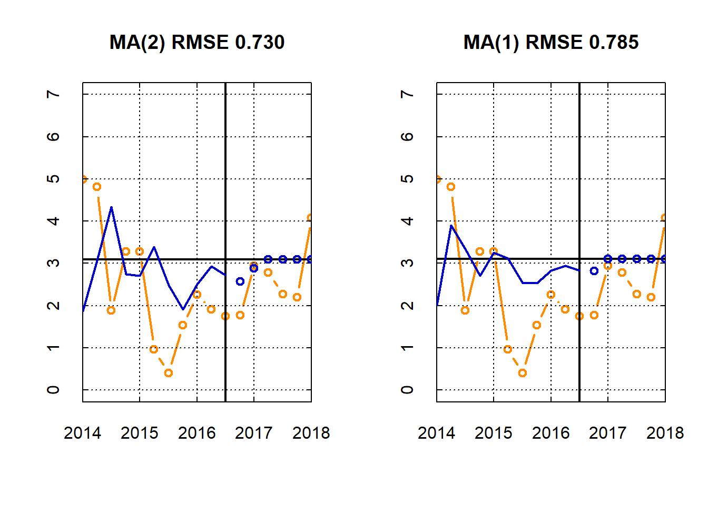

Session 5 ARMA models in practice
## load libraries
library(moments)
## function to plot time series
myplot <- function( dates , y , col='darkblue' , t='l' , lwd=2 , ylim=NULL , main=NULL ){
if( is.null(main) ){ par( mar=c(2,2,0.1,0.1) ) }
plot( dates , y , t=t , col=col , lwd=lwd , axes=F , xlab='' , ylab='' , xaxs="i" , ylim=ylim , main=main )
xticks <- axis.Date(1, x=dates, at=seq(dates[1], dates[length(dates)], "year") , lwd=0, lwd.tick=1, tck=0.02)
yticks <- axis(2 , lwd=0, lwd.tick=1, tck=0.02)
axis.Date(3, x=dates, at=seq(dates[1], dates[length(dates)], "year"), lwd=0, lwd.tick=1, tck=0.02, lab=F)
axis(4, lwd=0, lwd.tick=1, tck=0.02, lab=F)
abline( h=yticks , lty=3 )
abline( v=xticks , lty=3 )
box()
}5.1 Forecasting the U.S. GDP growth
In this session we consider an application of ARMA models to forecasting the U.S. GDP growth rates.
## Load U.S. GDP growth rate
D <- read.table('../data/gdp-us-grate.csv')
dates <- as.Date(as.character(D[,1]),'%Y-%m-%d')
## Setup
H <- 6 # predict 1,2,...,H steps ahead
N <- nrow(D)-6
y <- D[1:N,2]
y.out <-D[(N+1):(N+H),2]##
## Box-Ljung test
##
## data: y
## X-squared = 82.561, df = 22, p-value = 6.112e-09# ACF & PACF
par( mar=c(2,2,1,1) , mfrow=c(2,1) )
acf( y , ylim=c(-0.2,1) , lwd=5 , xlim=c(0,25) , col='darkorange2' , tck=0.02)
legend('topright',c('ACF'),col=c('darkorange2'),lwd=3)
pacf( y , ylim=c(-0.2,1) , lwd=5 , xlim=c(0,25) , col='darkorange2' , tck=0.02)
legend('topright',c('PACF'),col=c('darkorange2'),lwd=3)
Estimation
ar1 <- arima(y,order=c(1,0,0))
ma1 <- arima(y,order=c(0,0,1))
ma2 <- arima(y,order=c(0,0,2))
arma11 <- arima(y,order=c(1,0,1))
# Information criteria
ar1_aic <- (-2*ar1$loglik+2*3)/N # (constant, phi, sigma_e)
ma1_aic <- (-2*ma1$loglik+2*3)/N # (constant, theta, sigma_e)
ma2_aic <- (-2*ma2$loglik+2*4)/N # (constant, theta1, theta2, sigma_e)
arma11_aic <- (-2*arma11$loglik+2*4)/N # (constant, phi, theta, sigma_e)
ar1_bic <- (-2*ar1$loglik+log(N)*3)/N
ma1_bic <- (-2*ma1$loglik+log(N)*3)/N
ma2_bic <- (-2*ma2$loglik+log(N)*4)/N
arma11_bic <- (-2*arma11$loglik+log(N)*4)/N
## table of likelihood and ICs
tab1 <- round( rbind( c(ar1$loglik,ma1$loglik.ma2$loglik,arma11$loglik),
c(ar1_aic,ma1_aic,ma2_aic,arma11_aic) ,
c(ar1_bic,ma1_bic,ma2_bic,arma11_bic) ) , 3 )
row.names(tab1) <- c("loglik", "AIC", "BIC")
colnames(tab1) <- c("AR(1)", "MA(1)", "MA(2)", "ARMA(1,1)")
tab1## AR(1) MA(1) MA(2) ARMA(1,1)
## loglik -747.736 -746.702 -747.736 -746.702
## AIC 5.382 5.419 5.371 5.381
## BIC 5.421 5.458 5.423 5.433Forecasting
## get forecasts
ar1_pred <- predict(ar1, n.ahead=H)
ma1_pred <- predict(ma1, n.ahead=H)
ma2_pred <- predict(ma2, n.ahead=H)
arma11_pred <- predict(arma11, n.ahead=H)
## get fitted values
ar1_mu <- y-ar1$residuals
ma1_mu <- y-ma1$residuals
ma2_mu <- y-ma2$residuals
arma11_mu <- y-arma11$residuals
## compute RMSE
rmse <- function(y, f) {sqrt(mean((y-as.numeric(f))^2))}
ar1_mse <-rmse(y.out, ar1_pred$pred)
ma1_mse <-rmse(y.out, ma1_pred$pred)
ma2_mse <-rmse(y.out, ma2_pred$pred)
arma11_mse <-rmse(y.out, arma11_pred$pred)
## Plot
par(mfrow = c(1,2))
myplot( dates[(N-10):(N+H)] , c(y[(N-10):N], y.out) , t='b', main=sprintf('AR(1) RMSE %3.3f',ar1_mse) , ylim=c(0,7) , col='darkorange' )
abline( v=dates[N] , lwd=2 )
abline( h=ar1$coef['intercept'] , lwd=2 )
lines( dates[(N-10):N] , ar1_mu[(N-10):N] , t='l' , lwd=2 , col='blue3' )
lines( dates[(N+1):(N+H)] , as.numeric(ar1_pred$pred) , t='b' , lwd=2 , col='blue3' )
myplot( dates[(N-10):(N+H)] , c(y[(N-10):N], y.out) , t='b' , main=sprintf('ARMA(1,1) RMSE %3.3f',arma11_mse) , ylim=c(0,7) , col='darkorange' )
abline( v=dates[N] , lwd=2 )
abline( h=arma11$coef['intercept'] , lwd=2 )
lines( dates[(N-10):N] , arma11_mu[(N-10):N] , t='l' , lwd=2 , col='blue3' )
lines( dates[(N+1):(N+H)] , as.numeric(arma11_pred$pred) , t='b' , lwd=2 , col='blue3' )
par(mfrow = c(1,2))
myplot( dates[(N-10):(N+H)] , c(y[(N-10):N], y.out) , t='b', main=sprintf('MA(2) RMSE %3.3f',ma2_mse) , ylim=c(0,7) , col='darkorange' )
abline( v=dates[N] , lwd=2 )
abline( h=ma2$coef['intercept'] , lwd=2 )
lines( dates[(N-10):N] , ma2_mu[(N-10):N] , t='l' , lwd=2 , col='blue3' )
lines( dates[(N+1):(N+H)] , as.numeric(ma2_pred$pred) , t='b' , lwd=2 , col='blue3' )
myplot( dates[(N-10):(N+H)] , c(y[(N-10):N], y.out) , t='b' , main=sprintf('MA(1) RMSE %3.3f',ma1_mse) , ylim=c(0,7) , col='darkorange' )
abline( v=dates[N] , lwd=2 )
abline( h=ma1$coef['intercept'] , lwd=2 )
lines( dates[(N-10):N] , ma1_mu[(N-10):N] , t='l' , lwd=2 , col='blue3' )
lines( dates[(N+1):(N+H)] , as.numeric(ma1_pred$pred) , t='b' , lwd=2 , col='blue3' )
5.2 Exercises
Exercise 1 (Best forecast under the square loss)
Show that the best forecast under the square loss \[ L(y_{t+h}, \ \hat{y}_{t+h|t}) = (y_{t+h}-\hat{y}_{t+h|t})^2 \]
for some forecast horizon \(h \in \mathbb{N}\) is \[ \hat{y}_{t+h|t} = \mathbb{E} [y_{t+h} \ | \ y_t, \dots, y_1] \]
Exercise 2 (Best forecast under the absolute loss)
Show that the best forecast under the absolute loss \[ L(y_{t+h}, \ \hat{y}_{t+h|t}) = |y_{t+h}-\hat{y}_{t+h|t}| \]
for some forecast horizon \(h \in \mathbb{N}\) is \[ \hat{y}_{t+h|t} = \text{median}(y_{t+h} \ | \ y_t, \dots, y_1) \]
Exercise 3 (Invertibility of MA(1))
Consider the MA(1) process
\[ y_t = \theta \varepsilon_{t-1} + \varepsilon_t. \]
Show that:
- if \(|\theta|<1\), then the process is invertible in the past observed values:
\[ \varepsilon_t = \sum_{j=0}^{\infty} (-\theta)^j y_{t-j} \]
- if \(|\theta|>1\), then the process is invertible in the future observed values:
\[ \varepsilon_t = \frac{1}{\theta} \sum_{j=0}^{\infty} \left(-\frac{1}{\theta}\right)^j y_{t+j+1} \]